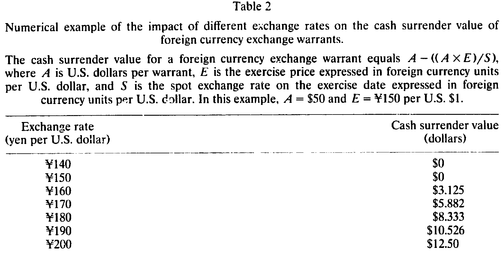
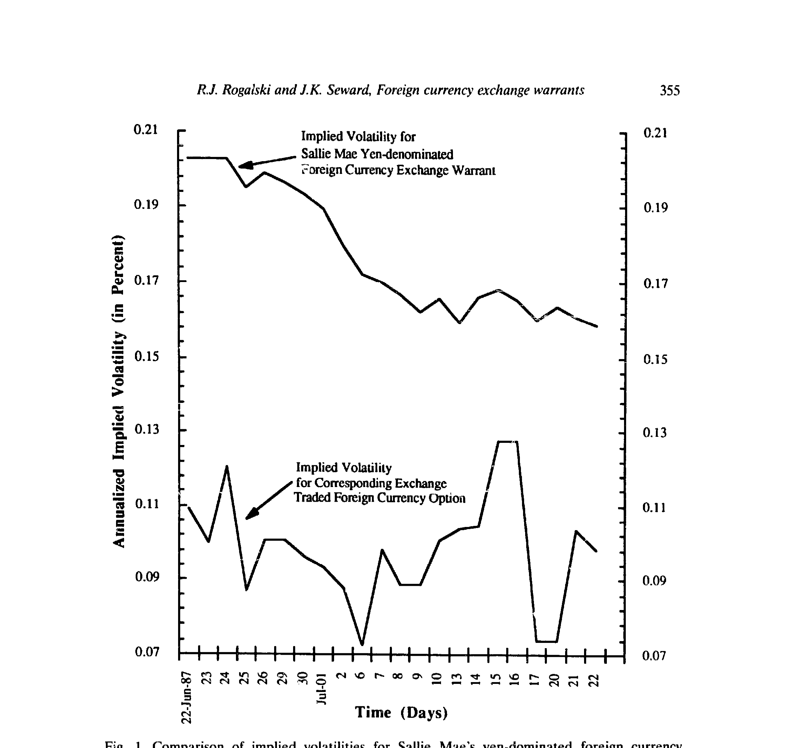
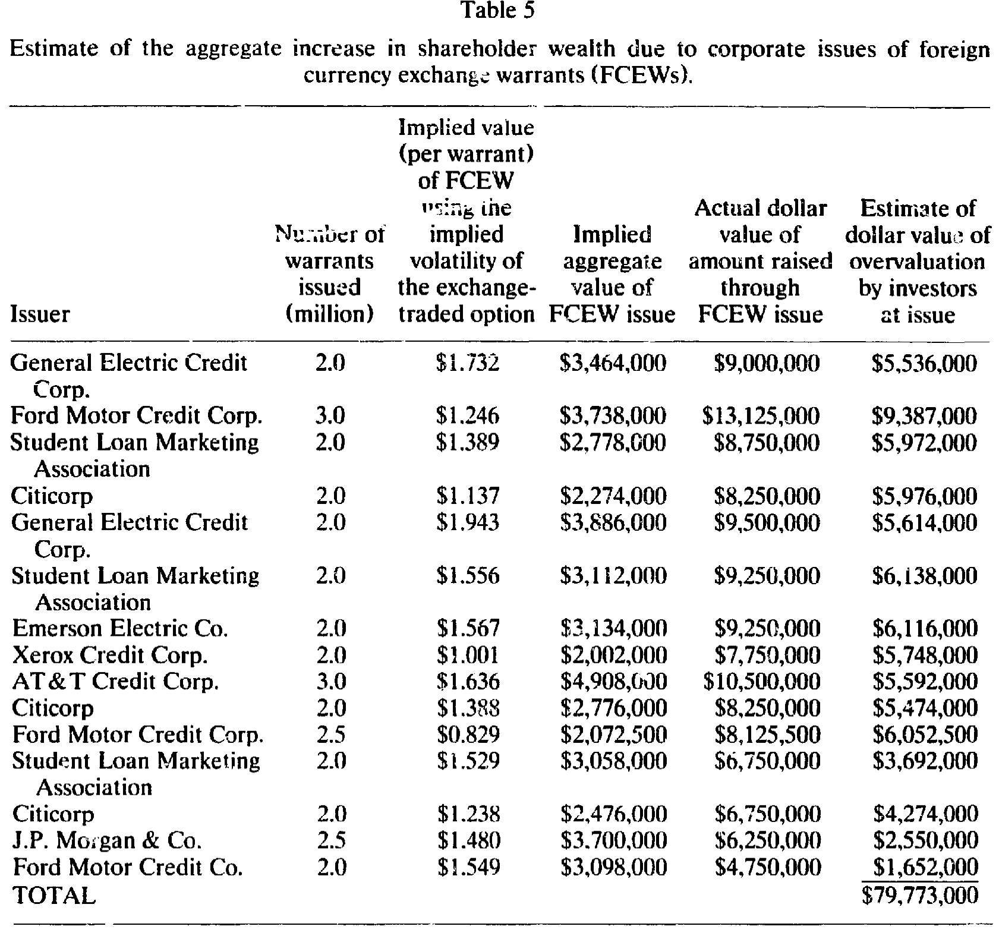
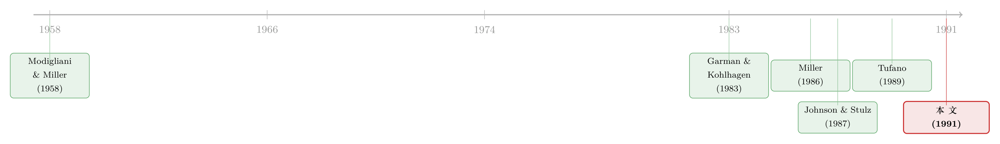

先卖出一份贵得离谱的汇率「保单」，再转身把风险甩给银行
本文读的是 Rogalski & Seward (1991, Journal of Financial Economics)：公司发明并高价卖出「外汇兑换权证」（长达五年的美元看涨期权），把它们卖给愿意多付钱的散户，单这一项创新就为发行人创造了约 $80 百万的总收益；而其中一家发行人——学生贷款营销协会（Sallie Mae）——在卖出权证的同一天，转手以更低的价格把同样的外汇敞口卖给了一家商业银行，从而把 $1.315 百万的差价无风险地锁进了股东口袋。作者由此提出一个不同于代理与财务困境的对冲动机：风险管理，是为了把金融创新的收益「焊死」在账上。
1 一个让 Modigliani-Miller 不太自在的故事
先从一句几乎所有公司金融课都会讲的话说起。
Modigliani 和 Miller（1958）告诉我们：在完美资本市场里，公司价值由投资决策决定，与融资方式无关。这句话有一个常被顺手推出的「推论」——既然融资无关紧要，那么公司的对冲与风险管理活动，对公司价值也应该无足轻重。说白了，公司忙着买卖外汇期权、利率互换，无非是把风险从左口袋挪到右口袋，股东自己在市场上也能做，何必劳烦公司？
可现实里，大公司偏偏养着庞大的风险管理部门，乐此不疲地对冲汇率、利率、商品价格。为什么？过去的解释大体两条腿走路：一是代理 (agency) 视角——经理人的风险偏好和股东不一样，对冲是为了安抚经理人；二是财务困境 (financial distress) 视角——对冲能降低破产概率和它带来的死重损失。
这篇论文想说的，是第三条腿。而且它不是靠模型推演说服你，而是把一个真实的案例摊开，一笔一笔算给你看：有那么一家公司，先亲手给自己制造了一笔外汇风险，几个小时之后又把这笔风险原封不动地卖掉，最后净落下 $1.315 百万——没有承担任何汇率风险。
这件事乍看违反直觉：你既然不想要这个风险，当初为什么要制造它？答案，藏在「制造」与「卖出」之间那道价差里。
2 主角登场：什么是外汇兑换权证（FCEW）
要看懂这桩套利，得先认识这个不太常见的工具——外汇兑换权证 (foreign currency exchange warrant, FCEW)。
它名叫「权证」，却和我们熟悉的股本权证大不一样：它不能转换成公司股权；它给持有人的，是在到期日前任何时刻、按事先约定的外币行权价购买一笔固定美元的权利。换句话说，FCEW 是一份美元的长期美式看涨期权，等价地说，是一份外币的长期看跌期权。
它和市场上交易的外汇期权也有几个关键区别：
- 期限长。FCEW 一般是五年期；而交易所挂牌的货币期权、期货合约多在 12 个月以内，连场外（OTC）货币期权也极少超过两年。FCEW 恰恰填补了「长久期外汇期权」这块市场空白。
- 现金结算。行权时双方并不真的交割两种货币，发行人的义务仅限于支付一笔美元现金，称为现金结算价值 (cash settlement value, CSV)。
- 无担保。FCEW 是发行人的无担保债务，因此带有违约风险。不过作者查过发行公司的评级，16 家里只有 Xerox Credit 一家在标普 AA 以下——清一色是声誉卓著的大公司，违约补偿那一块小到可以忽略（这也暗示：公司层面的金融创新，对成熟、声誉好的公司最有价值。参见 Cornell & Shapiro, 1988）。
1987–1988 两年里，美国公司一共发了 16 只 FCEW（11 只日元计价、5 只德国马克计价），合计市值 $163 百万，全部在美国证券交易所（Amex）挂牌。
3 模型这一节：现金结算价值是怎么算的
这篇论文没有花哨的连续时间随机模型，但它的「内核」是一条非常清楚的支付函数。把它讲透，后面所有的「高估」「套利」才站得住。
到期日（或行权日）的现金结算价值由下式决定：
$$ \text{CSV} = A - \frac{A \times E}{S} $$
其中各符号含义是这条故事的关键，我们用一张带标注的卡片把它拆开：
直觉是这样的：\(E/S\) 是「按行权价折算的成本」与「按市价折算的成本」之比。当美元相对外币升值时，每 1 美元能换到更多外币，\(S\) 上升，\(E/S\) 下降，于是 \(A\cdot E/S\) 这一块被压小，CSV 变大。反过来，如果到期日即期汇率 \(S\) 落在行权价 \(E\) 之下（美元相对贬值），\(A\cdot E/S \ge A\)，括号一减就变成负数——但 CSV 不能小于零，此时权证一文不值。
所以严格地说，到期价值是
$$ \text{CSV} = \max\!\left(0,\; A - \frac{A \times E}{S}\right). $$
一句话：FCEW 随着美元对外币升值而增值，这正是一份「看多美元」的期权。表 2 用一个 $A=\$50$、\(E=Y150\) 的例子，把不同汇率下的 CSV 摆了出来——汇率从 Y140 一路走到 Y200，结算价值从 $0 涨到 $12.50。

Table 2
到期之前呢？因为还有时间价值，FCEW 的市价会高于当下的 CSV，其高低取决于标的货币的波动率、利率差，以及（因为无担保）一点违约风险调整。注意，作者随后估计 FCEW 隐含波动率时，没有显式扣除违约风险——理由前面说过，发行人评级太高，这块可以忽略。本文也沿用 Garman & Kohlhagen（1983）、Grabbe（1983）那套外汇期权定价框架来作参照。
4 识别策略：「贵」是怎么被量出来的
接着，一个自然的问题是：作者凭什么说投资者高估了这些权证？毕竟价格是市场谈出来的。
这里的识别思路非常干净，可以概括成一句话：同一个标的，两个市场，两个波动率。 对每一只 FCEW，作者去费城期权交易所找一只「可比」的交易所挂牌外汇期权——所谓可比，是指「即期/行权」比率接近、期限取活跃合约里最长的那个。然后把 FCEW 的发行价代入定价公式，反解出隐含波动率 (implied volatility)，再与可比期权的隐含波动率对比。
逻辑在于：如果交易所期权的隐含波动率代表了标的货币真实的波动率，那么用它给 FCEW 定出来的价格，就是一笔零净现值 (zero NPV) 的「公允价」。FCEW 实际发行价比这个公允价高出多少，就是高估了多少。
结果相当惊人。每一只 FCEW 的隐含波动率都显著高于对应的交易所期权。以最早的那只为例——通用电气信贷（GECC）1987 年 6 月 11 日发行的日元 FCEW，隐含波动率高达 22.73%，而可比期权只有 12.88%；用真实波动率折出来的公允价是 $1.732，而发行价是 $4.50，两者之差 $2.768 竟然比公允价本身还高。换句话说，投资者付的价钱里，一多半是「凭空多给」的。
更有意思的是两条规律：
- 横截面上，越早发行的越贵，后发的越便宜。到了最后两只——J.P. Morgan 的德国马克 FCEW（隐含波动率
15.28%vs11.05%）和 Ford Motor Credit 的日元 FCEW（15.22%vs11.62%）——价差已明显收窄。由于这两只分属不同货币，说明两种货币市场上的「正 NPV 红利」都在被逐渐吃掉。 - 时间序列上，同一只 FCEW 上市后，它的隐含波动率会朝着交易所期权那条线收敛，尽管有时交易所期权的波动率自己还在往上走。图 1 把 Sallie Mae 日元 FCEW 与对应期权的隐含波动率画在了一起，那道从高位往下走、逐渐贴近的曲线，是「高估」最直观的证据。

Figure 1: Comparison of implied volatilities for Sallie Mae’s yen-dominated foreign currency
但收敛是慢的。作者特别指出，二级市场上 FCEW 的隐含波动率虽然都在向期权靠拢，过程却拖得很长——这意味着 FCEW 一旦开始交易，理论上存在让投资者赚取超额收益的窗口。换句话说，连二级市场都没把价格一下子拉回efficient的水平。
那么这块「贵」加总起来有多大？作者假设交易所期权的隐含波动率就是真实波动率，用它算出每只 FCEW 的零 NPV 公允总额，再与实际募得的金额相减。表 5 给出答案：这项金融创新为发行人创造的股东财富总额约为 $80 百万，差不多是发行 FCEW 募资总额的一半。 单 Sallie Mae 的德国马克那一只，高估额就有 $6,138,000。

Table 5
5 但真正关键的一步：把风险「卖掉」
到这里，故事只讲了一半，而且还留着一个大窟窿。
你看，Sallie Mae 是一家学生贷款机构，资产负债表上几乎不收外币现金流，杠杆高得像家存款型金融中介（1986 年底普通股账面价值还不到总资产的 4%）。它卖出日元 FCEW，等于凭空给股东背上了一笔美元升值就要赔钱的空头敞口：若到期汇率冲到 Y170 附近，写权证赚的那点钱会被赔个精光，而它的资产又不会因美元升值而获得任何对冲性的好处。
那么问题来了：一家既不需要、也不擅长持有外汇敞口的公司，凭什么去发这种东西？如果它发完就干等着，那 $6 百万的「高估」红利，分分钟可能变成几百万的亏损。
于是反转出现了。理解 Sallie Mae 如何完美对冲，钥匙藏在招股说明书第 5 页那句话里：
权证的初始公开发行价，远高于日元的商业用户在银行间市场为一份（标的金额大得多的）可比期权所支付的价格。
也就是说，发行人自己在文件里就承认：散户买这玩意儿，付的是「零售价」；而在银行间市场，同样的期权有「批发价」。Sallie Mae 干的事，就是把这两个价格之间的差吃下来。具体一笔账（同一天完成）：
- Morgan Stanley 为 200 万张定价
$4.375的 FCEW 付给 Sallie Mae$8,050,000（即扣除$0.35/张承销费后的$4.025×200 万）。 - 同一天，Sallie Mae 从 Bankers Trust 以
$3.3675/张买入 200 万份货币期权，净支出$6,735,000。这批期权条款与卖给公众的 FCEW 完全一致（同行权价、同到期日、同最小行权数量限制等）。
于是 Sallie Mae 在敞口诞生的那一刻就把它整笔卖了出去：批发价 $3.3675 远低于零售价 $4.025，一进一出，无风险地净落下 $8,050,000 - \$6,735,000 = \$1,315,000。
这本质上是一桩套利 (arbitrage)：Sallie Mae 把那些进不了银行间市场的零售投资者的需求聚合起来，按零售价收钱；再因为总盘子够大、能进银行间市场，按批发价把敞口转给商业银行。它扮演的，是一个在不流动市场里提供中介服务的角色，并以此为股东创造了财富。四天后它又如法炮制了一只德国马克 FCEW（那天德国马克市场上「未被满足的零售需求」更大）。
这就把全文的核心论点钉死了：
金融创新创造的是「毛收益」——把高估的证券卖给愿意多付的客户群；而风险管理提供的是「保险」——它锁住其中一部分毛收益，对冲掉创新顺带制造出的增量风险（这里是汇率风险）。 二者密不可分：公司专门从事「风险的制造与管理」，并在边际上以此抬高股东财富。
这和教科书里的对冲动机截然不同。代理论说对冲是为了迁就经理人，困境论说对冲是为了少破产；而这里，对冲纯粹是把一次成功的套利「固定下来」的工具。关于「公司认真把风险管理理论当回事」会做出什么样的操作，可参见《一家公司，买了自己股票的看涨期权》；关于把对冲「焊」进证券本身的工程化做法，可参见《用黄金还债：一家垃圾评级公司，如何把对冲「焊」进了债券里》。
6 一个被顺带捅破的窟窿：信息含量
文章最后还顺手戳了一下资本结构的信息不对称理论。
按这类理论，公司的融资决策会向市场释放信号（发股票常被读成「股价被高估」的坏消息）。但 FCEW 这类创新告诉我们：当对冲是表外 (off-balance-sheet) 完成的——你在公开市场上只看到 Sallie Mae 发了一笔附带权证的票据，根本看不到它转手买了一篮子期权——那么外部投资者就很难从这笔「创新融资」里读出它真实的信息含量。换句话说，表外风险管理会模糊融资决策的信号。这是一条值得后续理论认真对待的暗线。
7 文献脉络
把这条线索捋一捋，会看到一个清晰的演进。
起点是 Modigliani & Miller（1958）：在完美市场里融资无关、价值由投资决定。此后几十年的公司金融，本质上是在一条一条地数完美市场假设的「缝隙」——税、破产成本、代理成本、信息不对称（综述见 Harris & Raviv, 1991）——看它们如何让融资重新「相关」起来。
接着，是一波关于金融创新的描述性与解释性工作。Miller（1986）和 Ross（1989）讨论了催生无穷无尽合约创新的经济与监管力量；Tufano（1989）则做了量化——他记录了 1974–1986 年间 58 项金融创新，在美国公开市场募资约 $280 billion。Shapiro（1987）记下的零息债券，是「微调现有证券就能套出巨大收益」的经典例子（Pepsico 那笔的净借款成本比可比美债低了约 400 个基点）。
然后是定价工具的就位：Garman & Kohlhagen（1983）、Grabbe（1983）给出了外汇期权的估值框架；Johnson & Stulz（1987）进一步处理了带违约风险的期权定价——这些正是本文反解隐含波动率、判断「贵不贵」的标尺。
本文所处的位置，是把「创新创造价值」这件事第一次精确地量了出来（靠 FCEW 是交易所挂牌、可观测的这一便利），并进一步揭示：创新与风险管理是同一枚硬币的两面。对冲不是 Smith（1990）等人讲的代理动机，而是锁定创新红利的手段。

8 评论与延伸（Q&A + 研究方向）
(a) 几个可能的疑问
Q：「高估」会不会只是因为拿 90 天期权去比五年期权，期限错配造成的假象？
这是作者自己最担心的内生性。如果货币波动率的期限结构是上斜的，那么用短期期权的隐含波动率当「真值」，会系统性地高估 FCEW 的溢价。作者的回应是用日元、马克的每日即期汇率，按不同时间长度估波动率去考察期限结构；他们也指出，最后两只 FCEW 溢价更小的「另一种解释」是它们期限更短（三年）而非波动率收敛。坦白说，这条威胁没有被彻底关死——但隐含波动率高出近 10 个百分点的量级，很难单靠期限结构解释掉。
Q：既然二级市场上隐含波动率慢慢收敛，是不是说明市场其实是有效的，只是慢了点？
恰恰相反，作者把「慢」当成高估的加强证据。如果发行价是公允的，上市后不该出现系统性的、朝着期权波动率方向的单边收敛。收敛本身说明发行价偏高；而收敛之慢，又说明二级市场存在让投资者赚超额收益的窗口——这对「半强式有效」是双重的不利证据。
Q：违约风险真的可以忽略吗？FCEW 毕竟是无担保债务。
在这个样本里大致可以。16 家发行人中 15 家评级在 AA 及以上，只有 Xerox Credit 一家更低。高评级意味着违约补偿那块极小，所以不显式扣除违约调整，不会实质改变「严重高估」的结论。但这也限定了外部效度：换一批低评级发行人，这套「忽略违约」的算法就不成立了。
Q：Sallie Mae 的 $1.315 百万和表 5 里它那只马克 FCEW 的 $6,138,000 高估额，是一回事吗？
不是，这正是「毛」与「净」的区别。表 5 的高估额衡量的是投资者多付的总额（毛收益）；而
$1.315百万是 Sallie Mae 通过对冲实际锁进口袋的净收益——零售价与它转手卖给 Bankers Trust 的批发价之差。中间的差额，被承销、做市、银行间交易等环节分掉了。论文的核心恰恰是：风险管理让公司把毛收益的「一部分」变成了无风险的净收益。
Q：既然这是「白捡的钱」，为什么商业银行不自己下场发 FCEW 把机会吃干净？
作者在脚注里给了一个解释：投资者可能认为工业类公司（而非商业银行）更有信用，违约风险那块更小。于是工业公司其实是在为商业银行提供一种「信用增级」服务——由信用更好的主体出面发行，银行在批发端接走敞口。这是一种基于声誉的分工。
Q：这套故事对「对冲降低公司价值还是无关」的老争论意味着什么？
它给出了一个对冲创造价值的干净反例，但机制很特殊：价值不是来自降低困境概率或迁就经理人，而是来自锁定一次证券设计上的套利。所以它不否定代理/困境视角，而是补上第三种动机。要区分这三种动机，需要看公司对冲的时点与触发条件：本案里对冲与发行同日发生、且金额完全匹配，这种「即时、精确对冲」的指纹，是代理/困境论解释不了的。
(b) 几个可能的研究问题与提案
1. 把「创新红利」延伸到公司债与结构性票据市场。
【经济故事】FCEW 只是「向特定零售客户群高价卖出嵌入期权」的一个特例。今天的可赎回债、可转债、信用挂钩票据、结构性票据，本质上都在把衍生品「打包」卖给够不到批发市场的投资者。发行人是否也在系统性地赚取「零售—批发」价差？ 【可行性】中。需要 TRACE 的公司债成交数据 + Bloomberg 的同条款 OTC 衍生品报价来构造「批发公允价」。识别上的难点与本文相同：找到真正可比的批发对照物。对内嵌期权清晰、可拆解的票据最 doable。
2. 表外对冲对融资决策信息含量的「遮蔽效应」。
【经济故事】本文末尾的猜想：当对冲在表外完成，市场难以从融资公告里读出真实信号。可检验的推论是——披露了配套对冲安排的创新融资，其公告日股价反应，应当系统性地不同于未披露的。 【可行性】中。需要逐份招股书/10-K 抽取对冲条款（可用 LLM 做文本抽取），配合事件研究。难点是对冲披露的内生性：选择对冲的公司本身可能不同。
3. 「慢收敛」与二级市场流动性：谁在二级市场接盘？
【经济故事】本文发现 FCEW 上市后隐含波动率向期权缓慢收敛，存在超额收益窗口。这与公司债「流动性慢」的研究遥相呼应——是谁在为这种缓慢收敛提供流动性，又赚走了多少？ 【可行性】中高。若能找到 Amex 当年 FCEW 的逐笔成交（历史微观数据是瓶颈），可直接测算收敛速度与可实现超额收益。流动性这条线在今天的公司债市场上更易做（数据更全）。
4. 跨货币的「未被满足的零售需求」与定价。
【经济故事】Sallie Mae 在发完日元四天后转发马克，理由是马克市场「未被满足的零售需求」更大（当时存量马克 FCEW 更少）。这暗示溢价随同币种存量供给递减——一个清晰的供给侧实证假说。 【可行性】高（在本文样本内即可做）。用 16 只 FCEW 的发行顺序、币种、存量做面板，检验「同币种已发行只数」对高估额的负向影响。样本小是硬伤，只能当作建议性证据。
9 我的判断
贡献上，这篇论文最漂亮的地方不是它发现了「投资者高估 FCEW」——隐含波动率高出近 10 个百分点，这件事本身并不难看出来；而是它借 FCEW「交易所挂牌、敞口可精确对冲」这一难得的便利，把创新的市场价值第一次量到了美元级别（约 $80 百万，募资额的一半），并用 Sallie Mae 同日、等额、镜像的对冲，给「金融创新 ↔ 风险管理」这条链条提供了一个近乎实验室级别的干净案例。$1.315 百万的无风险净收益，是教科书里很难找到的、把抽象论点钉死的实证锚点。
对识别的担忧有两点。其一是前面反复出现的期限错配：用 90 天期权当五年期权的「真值」，作者自己也承认这会把溢价往上偏，虽然量级让人难以全盘归因于此，但「最后两只更便宜到底是收敛还是短期限」这个问题，文中并没有给出无懈可击的切割。其二是样本极小（16 只 FCEW、一个深度案例），横截面上的「越早越贵」更像是叙事性证据而非统计推断——它讲了一个可信的故事，但还谈不上是被严格检验的规律。
后续想看到的，是把这套「零售—批发价差即创新红利」的测量法，搬到样本大得多、数据全得多的现代市场——结构性票据、信用挂钩债、可转债——去看它是不是一个普遍机制；以及把本文末尾那条「表外对冲遮蔽信息含量」的猜想，做成一个可证伪的事件研究。三十多年过去，发行人继续在卖 FCEW（论文完成后作者还观察到 Merrill Lynch 和 Citibank AG 在 1991 年 4 月发了马克 FCEW，后者甚至挂在德国交易所、用马克结算），这门「在不流动市场里做中介」的生意，显然没有停。关于「公司到底对冲了多少、又该怎么对冲」，可继续参见《公司到底用衍生品对冲了多少风险？》与《对冲的下半场：不是「要不要」，而是「怎么对冲」》，以及把对冲当成「内部汇率机器」的《对冲，不是一道选择题，而是一台「内部汇率」机器》。
参考文献
Cornell, B., & Shapiro, A. C. (1988). Financing corporate growth. Journal of Applied Corporate Finance 1(2), 6–22.
Garman, M. B., & Kohlhagen, S. W. (1983). Foreign currency option values. Journal of International Money and Finance 2(3), 231–237.
Grabbe, J. O. (1983). The pricing of call and put options on foreign exchange. Journal of International Money and Finance 2(3), 239–253.
Harris, M., & Raviv, A. (1991). The theory of capital structure. Journal of Finance 46(1), 297–355.
Johnson, H., & Stulz, R. (1987). The pricing of options with default risk. Journal of Finance 42(2), 267–280.
Miller, M. H. (1986). Financial innovation: The last twenty years and the next. Journal of Financial and Quantitative Analysis 21(4), 459–471.
Modigliani, F., & Miller, M. H. (1958). The cost of capital, corporation finance and the theory of investment. American Economic Review 48(3), 261–297.
Rogalski, R. J., & Seward, J. K. (1991). Corporate issues of foreign currency exchange warrants: A case study of financial innovation and risk management. Journal of Financial Economics 30(2), 347–366.
Ross, S. A. (1989). Institutional markets, financial marketing, and financial innovation. Journal of Finance 44(3), 541–556.
Shapiro, A. C. (1987). Guidelines for long-term corporate financing strategy. Midland Corporate Finance Journal 4, 6–19.
Smith, C. W. (1990). The theory of corporate finance: A historical overview. In Smith, C. W. (Ed.), The Modern Theory of Corporate Finance. McGraw-Hill.
Tufano, P. (1989). Financial innovation and first-mover advantages. Journal of Financial Economics 25(2), 213–240.